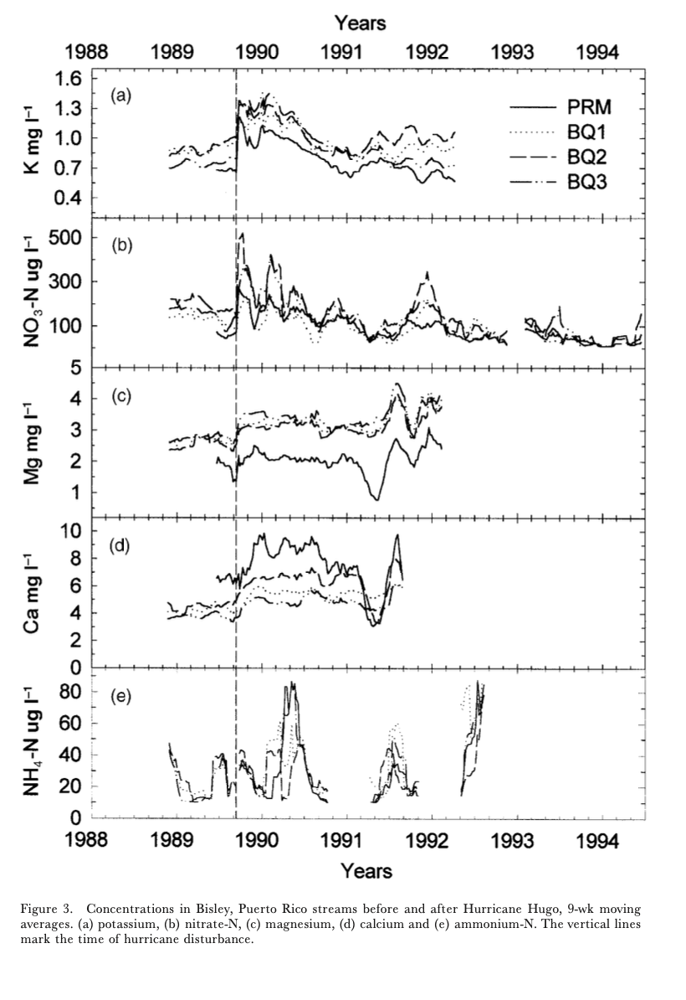

Big storms can damage forests and change what flows in streams; this project re-creates Figure 3 from Schaefer et al. (2000) to show a clear, repeatable analysis.

Figure 3 from Schaefer et al. (2000)
Data
Weekly stream-water chemistry from the Luquillo Experimental Forest (PRM, BQ1–BQ3) around Hurricane Hugo (1989), focusing on five ions: K, NO₃-N, Mg, Ca, and NH₄-N.
Code
# Assign cleaned data to the variable bqprm_k <-read_csv(here("data", "cleaned", "bqprm_k.csv"))bqprm_no3_n <-read_csv(here("data", "cleaned", "bqprm_no3_n.csv"))bqprm_mg <-read_csv(here("data", "cleaned", "bqprm_mg.csv"))bqprm_ca <-read_csv(here("data", "cleaned", "bqprm_ca.csv"))bqprm_nh4_n <-read_csv(here("data", "cleaned", "bqprm_nh4_n.csv"))
Methods
The workflow for this paper consist of: read and clean the CSVs, mark the hurricane date, and plot each ion over time. The goal is to reproducible code.
First we are going to call the function in R/moving_average to compute.
Code
# Call in the function from R folder to be usedsource(here("R", "moving_average.R"))
All data cleaning has been completed in R/data_cleaning.R that includes reshape to long format, add week numbers, join sites, compute 9-week moving averages. Below is the following that has been completed in the R/data_cleaning.R.
Code
# Assign the data to the variable ## Load and clean dataset from BQ1 to PRMBQ1 <-read_csv(here("data", "raw", "QuebradaCuenca1-Bisley.csv")) %>%clean_names()BQ2 <-read_csv(here("data", "raw", "QuebradaCuenca2-Bisley.csv")) %>%clean_names()BQ3 <-read_csv(here("data", "raw", "QuebradaCuenca3-Bisley.csv")) %>%clean_names()prm <-read_csv(here("data", "raw", "RioMameyesPuenteRoto.csv")) %>%clean_names()# Data Cleaning## Reshape BQ1 and PRM data to long format with weeks and nutrient concentrationsBQ1_fig_3 <- BQ1 %>%mutate(weeks = lubridate::week(sample_date)) %>%pivot_longer(cols =c("k", "no3_n", "mg", "ca", "nh4_n"),names_to ="nutrients", values_to ="concentration") %>%select(sample_date, sample_id, nutrients, concentration, weeks) %>%ungroup()BQ2_fig_3 <- BQ2 %>%mutate(weeks = lubridate::week(sample_date)) %>%pivot_longer(cols =c("k", "no3_n", "mg", "ca", "nh4_n"),names_to ="nutrients", values_to ="concentration") %>%select(sample_date, sample_id, nutrients, concentration, weeks) %>%ungroup()BQ3_fig_3 <- BQ3 %>%mutate(weeks = lubridate::week(sample_date)) %>%pivot_longer(cols =c("k", "no3_n", "mg", "ca", "nh4_n"),names_to ="nutrients", values_to ="concentration") %>%select(sample_date, sample_id, nutrients, concentration, weeks) %>%ungroup()prm_fig_3 <- prm %>%mutate(weeks = lubridate::week(sample_date)) %>%pivot_longer(cols =c("k", "no3_n", "mg", "ca", "nh4_n"),names_to ="nutrients", values_to ="concentration") %>%select(sample_date, sample_id, nutrients, concentration, weeks) %>%ungroup()## Combine all datasets and calculate rolling averages for each nutrientbqprm <-full_join(BQ1_fig_3, BQ2_fig_3) %>%full_join(BQ3_fig_3) %>%full_join(prm_fig_3) %>%group_by(sample_id, nutrients) %>%relocate(weeks, .after = sample_date) %>%mutate(sample_id =as.factor(sample_id), nutrients =as.factor(nutrients)) %>%mutate(rolling_average =sapply(as.Date(sample_date), moving_average, dates =as.Date(sample_date), concentration = concentration, win_size_wks =9))## Filter dataset for the selected nutrients and years between 1988 to 1995bqprm_k <- bqprm %>%filter(nutrients =="k") %>%filter(between(lubridate::year(sample_date), 1988, 1995))bqprm_no3_n <- bqprm %>%filter(nutrients =="no3_n") %>%filter(between(lubridate::year(sample_date), 1988, 1995))bqprm_mg <- bqprm %>%filter(nutrients =="mg") %>%filter(between(lubridate::year(sample_date), 1988, 1995))bqprm_ca <- bqprm %>%filter(nutrients =="ca") %>%filter(between(lubridate::year(sample_date), 1988, 1995))bqprm_nh4_n <- bqprm %>%filter(nutrients =="nh4_n") %>%filter(between(lubridate::year(sample_date), 1988, 1995))# Export Data## Saving cleaned data frames to a new CSV to data folder (change as needed)write_csv(bqprm_k, file =here("data", "cleaned", "bqprm_k.csv"))write_csv(bqprm_no3_n, file =here("data", "cleaned", "bqprm_no3_n.csv"))write_csv(bqprm_mg, file =here("data", "cleaned", "bqprm_mg.csv"))write_csv(bqprm_ca, file =here("data", "cleaned", "bqprm_ca.csv"))write_csv(bqprm_nh4_n, file =here("data", "cleaned", "bqprm_nh4_n.csv"))
Results
The figure should mirror the paper: sharp rises in K, NO₃-N, and NH₄-N right after the hurricane that fade within ~1–2 years, with smaller changes in Mg and Ca; streams differ some, but the overall pattern is the same.
Reference
Schaefer, Douglas. A., William H. McDowell, Fredrick N. Scatena, and Clyde E. Asbury. 2000. “Effects of Hurricane Disturbance on Stream Water Concentrations and Fluxes in Eight Tropical Forest Watersheds of the Luquillo Experimental Forest, Puerto Rico.” Journal of Tropical Ecology 16 (2): 189–207. https://doi.org/10.1017/s0266467400001358.